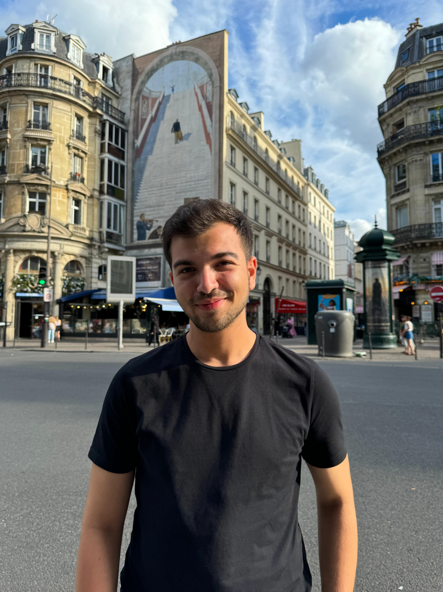

Merhaba, ben
Berke Beşli.
Yazılım geliştirme, yapay zeka ve veri bilimi alanlarına odaklı bir mekatronik mühendisiyim. Veri bilimi tecrübemi ve yazılım geliştirme becerilerimi kullanarak, gerçek sorunları çözen pratik ve etkili projeler geliştiriyorum.

Hakkımda
İstanbul'da yaşayan, yazılım geliştirici olmayı hedefleyen yeni mezun bir mekatronik mühendisiyim. Disiplinlerarası mühendislik altyapımın getirdiği sistem odaklı bakış açısıyla, bir yandan C# ve Python gibi dillerle sağlam bir yazılım temeli inşa ederken, diğer yandan veri bilimi ve makine öğrenmesi alanlarında pratik projeler geliştirmeye odaklanıyorum.
Python ile uçtan uca veri süreçleri tasarlamak, Scikit-Learn ve XGBoost gibi kütüphanelerle tahmine dayalı modeller kurmak ve generative AI teknolojilerinde kendimi geliştirmek üzerine büyük bir motivasyonla çalışıyorum.
Geçmişteki iş tecrübelerimin bana kattığı iletişim becerileri ve müşteri anlayışı, problemlere hem teknik açıdan, hem de kullanıcı ihtiyaçlarını gözeten, geniş bir perspektiften değerlendirmemi sağlıyor. Hedefim, yenilikçi yaklaşımlar kullanarak, günlük hayatı veya iş süreçlerini kolaylaştıran, somut fayda sağlayan, pratik çözümler üretmek ve projeler geliştirmektir.
İletişim
Yeni projeler, sistem mimarisi tartışmaları veya olası işbirlikleri için bana mesaj bırakmaktan çekinmeyin.